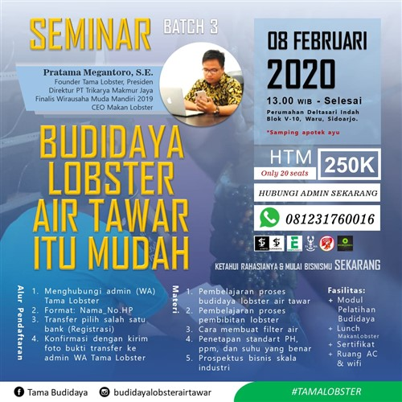
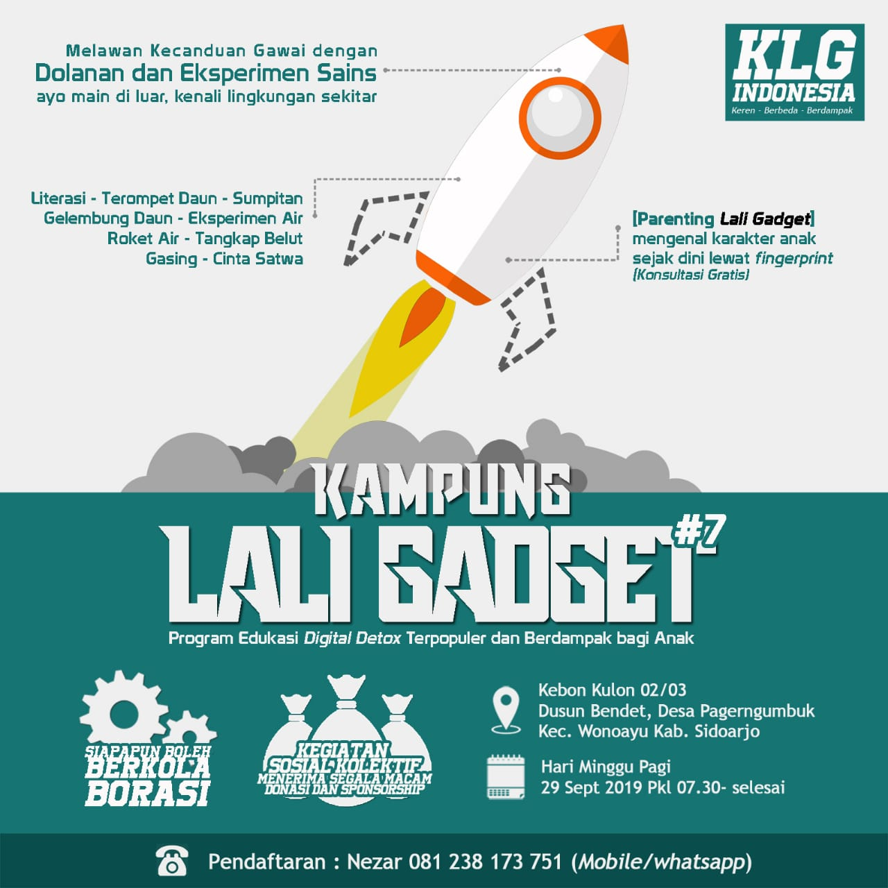

EVENT
SIDOARJO PROPERTY EXPO (SIPEX 2020)
Tanggal: 27 November-6 Desember 2020
Tempat: Lippo Plaza Sidoarjo

Seminar Budidaya Lobster Air Tawar Batch 3
Tanggal: 8 Februari 2020
Tempat: Kantor Tama Lobster Perumahan Deltasari Indah
Rumah Idaman Expo Sidoarjo 2019
Tanggal: 25 Oktober - 3 November 2019
Tempat: Atrium Suncity Mall, Sidoarjo

Kampung Lali Gadget
Tanggal: 29 September 2019
Tempat: Kebon Kulon 02/03, Dusun Bendet, Desa Pagerngumbuk Kec. Wonoayu Kab. Sidoarjo
Pukul: 07.30 – selesai
GEBUK – Gebyar Buku Sidoarjo
Tanggal: 16-31 Agustus 2019
Tempat: Warehouse Gramedia, Jl. Berbek Industri I no 29-31, Waru, Sidoarjo
Waktu: 09:00-17:00 WIB
Grebek Pasar Buku Gramedia 2019
Tanggal: 08-10 Agustus 2019
Tempat: Warehouse Gramedia, Jl. Berbek Industri I No. 29-31, Waru, Sidoarjo